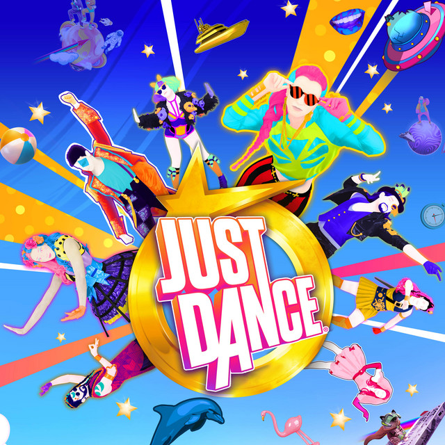

Groove on the Go with BeReal Jam.
Research and Designer
7 Weeks
Mobile App
User Surveys
Competitive Analysis
Figma
Prototyping
Wireframing
User Flow
This app extension project was made for an upper-division design class at UC San Diego called Social Computing. In this class, we explored the intersection between social behavior and computational systems. For the final project, we designed a social computing experience that can be functional and "played/utilized" by multiple people within a specific setting.
The main motivation behind this project was to create a novel app that brings communities of people together to create long lasting memories.
We wanted to come up with an idea that incorporates dance and social interactions. Motivated by the concept of BeReal, we decided to build off of the app and create an extension. Currently, when a BeReal notification goes off, users take a photo of what they are currently doing and post it onto the app for friends to view. We wanted to incorporate a similar idea but with dance instead.
Based on our research of the current platform, we saw many BeReal users express their opinions on community threads. One user mentioned that the platform “limits the socializing part, making it impossible to obsess over and spend countless hours” on the platform. Not only that, an article discussing the decline of BeReal mentioned problems in authenticity. The decline in authenticity stems from our concerns about what others think of us, discouraging us from posting.
The usage of the app has been slowly declining because it gets repetitive when we take snapshots of the same activity every day, whether it’s doing homework on our desks, walking to/from campus, running errands, etc.
This is where BeReal Jam steps in. It addresses these issues by bringing users back onto BeReal by incorporating different dances and songs every day to prevent repetitiveness, encouraging people to post.
We came up with a few research objectives we wanted to address in our project:
Based on our research, many BeReal users feel that BeReal is a great platform to capture spontaneous moments in their lives daily. However, they lose interest due to the repetitive nature of the experience. In order to foster relationships and facilitate new social connections on BeReal, our team will be designing an extension to BeReal that allows users to create dance content with friends, anywhere at any given time.
We conducted an online survey to understand the following questions:
To gather immediate feedback, we used convenience sampling and gathered data from 23 participants through classes, friends, and work. We distributed an online Google Form survey through Discord, Instagram, and Messages.
The survey includes 11 questions, both open-ended and quantitative, in order to gain an understanding of what challenges or problems our users are facing with BeReals current app.
TikTokTikTok is a popular platform that allows for short dance videos, content creation, and diverse content sharing globally. The platform has found a way for viewers and creators to interact in real-time by the Live feature. However, it does not offer an option for users to participate asynchronously at different times. |
|
|  |
Just DanceJust Dance is an interactive dance video game where users follow dance moves and score points in competition with their friends. While it's a popular game, the use of sensors to monitor movements can pose drawbacks, especially with more players joining. Users need to stand at a certain distance for the sensors to capture their movements, but this distance is often unclear until they begin playing, leading to potential frustration. The presence of animated avatars in Just Dance can detract from the authenticity of the experience. We want to prioritize authenticity among users, encouraging genuine expression and interaction through spontaneous dance challenges and community engagement features. |
Snapchat SpotlightSnapchat Spotlight is a feature offered on Snapchat for creating short videos including dance challenges, skits, and creative storytelling. However, it lacks interaction due to the absence of a commenting feature that limits engagement. The anonymity of creators can also hinder the formation of new relationships. We want to explore ways in how we can feature original content while also fostering new connections by allowing users to add strangers to their dance mashup videos, promoting social interaction and community building. |
As part of the project, we had to create a playable in-person prototype. Given the short time frame for the project, we are not expected to fully execute the app idea on BeReal.
We started off the prototyping session by introducing our app extension idea and showing users a little bit of how it works. We first showed the audience a tutorial of our group dance when it was edited together. This was made to give users a feel of the viewer experience since we can’t edit their videos together during the short prototyping session. We also had a Slido pulled up on the screen for the audience to comment as we played the video to create a more interative and immersive experience.
Group Tutorial Video
We set the scene for our users by walking them through step by step. Once they get a notification for BeReal Jam, they will click on the notification, read the instructions, and see the song they will be dancing to.
After this, you will watch the tutorial video you are given and set your phone up to record the dance.
Tutorial Video
Example Recording Setup
To create a playable prototype for a big class with a time limit, we decided to break up the class into 4 groups with one group in each corner of the room. Each group was assigned a leader.
After the 5 minutes, we recorded the dance giving them two tries, one practice round, and one official round. Then we showed them their dance video with a Slido chat, facilitating a comment feature to enhance user interaction and provide a richer, more immersive experience within the app.
In Class Dance Video
Slido Chat
The app extension idea is meant to be done in alone or in small groups. Given some constraints, we did the dance in larger groups and recorded the video in one go to avoid editing.
After the prototyping session, we asked the audience about their experience and how we could improve our app idea.
Features added onto BeReal Jam based on feedback:
We started off the second prototype with a recap of BeReal Jam and clearly stated what happens when you miss the initial Jam. If you miss the first notification which includes a 3 hour time frame to record your video, you can still post late, however, you lose out on voting. You will see your friend's dances as usual and your friends will get a notification that their video has been editied.
We added an additional voting feature allowing users to vote for the song they will be dancing to in the next Jam. Voting takes place after users record their video. Also, we added various difficulty levels to account for beginner dancers and more advanced dancers. We included 3 levels: Easy, Normal, and Hard. Last but not least, we added a new feature called BeReal Challenges. You can challenge your friends or strangers to a one-on-one dance battle where your friends can vote for the better dancer. You will be dancing to the Jam song of the day and you can either follow the moves or create your own dance. Before having users test out the new features, we showed our audience what the jammer experience would essentially look like with user flows.Jammer Flow
Viewer Flow
Instead of having users take part in a regular Jam as we did in the first prototype, we decided to have them test out BeReal Challenges.
After two minutes, we had 2 people from each group come to the front and take part in a dance battle. Instead of having users learn the whole dance, we made them learn parts of the dance so one member from groups 1, 2, 3, and 4 was on a team and the other remaining 4 members were a team.
To do the challenge, we had group member 1 dance their part then members 2, 3, and 4 will follow after. The rest of the class was the audience and they watched both teams side by side. We also had a slido for comments as they watched the teams dance live.Dance Challenge
Slido Chat
After the dance, they voted for which team did it best!
Voting Results
We also had users vote for the next jam song. Usually, the Jam voting does not take place after a challenge, it takes place after you record your Jam but we decided to let the audience vote to give them a feel of the new voting feature.
Voting Results
After the prototyping session, we asked the audience about their experience and how we could improve our app idea.
For our design system, we have introduced a new logo for BeReal Jam that seamlessly integrates with the existing color palette, ensuring coherence across the current BeReal interface. Our efforts have extended to the augmentation of the BeReal UI with novel components such as slider bars and buttons, enriching the user experience while maintaining the distinct identity of our design.